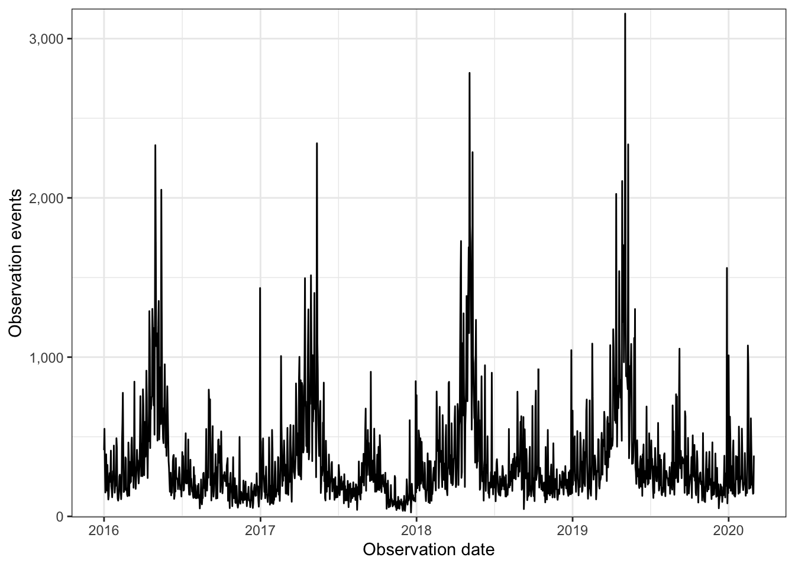
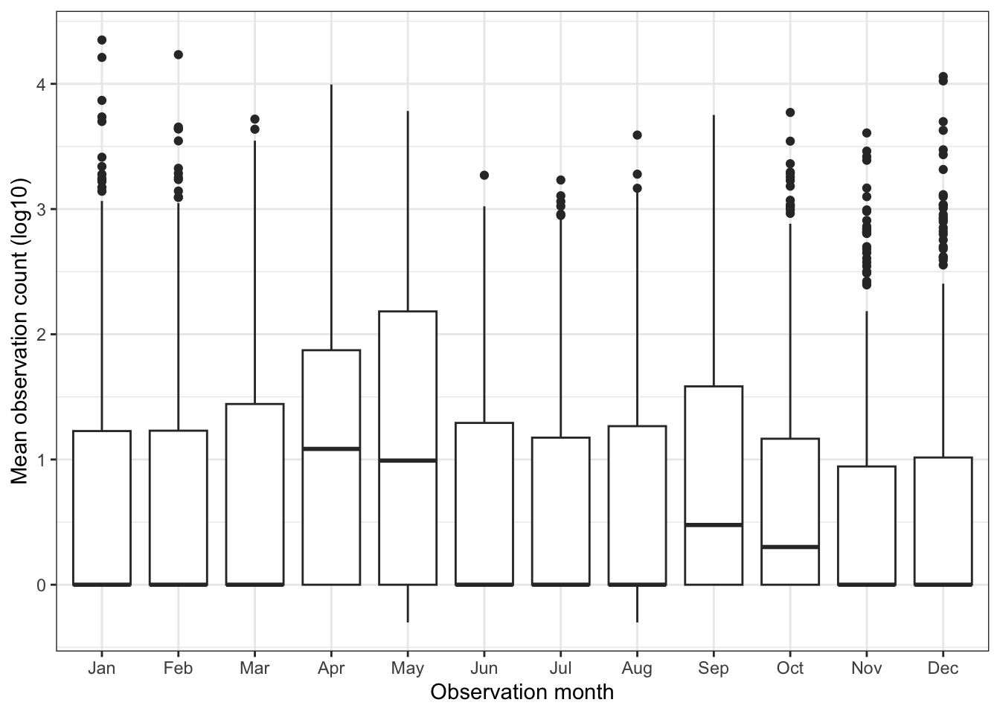
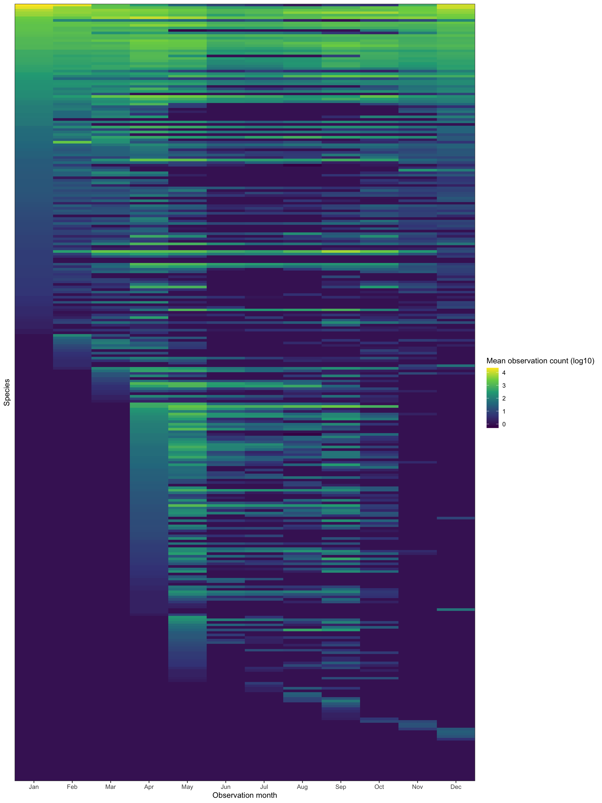
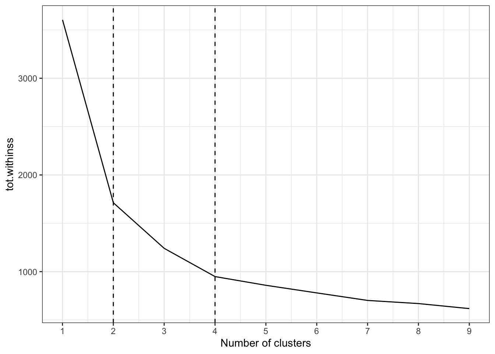
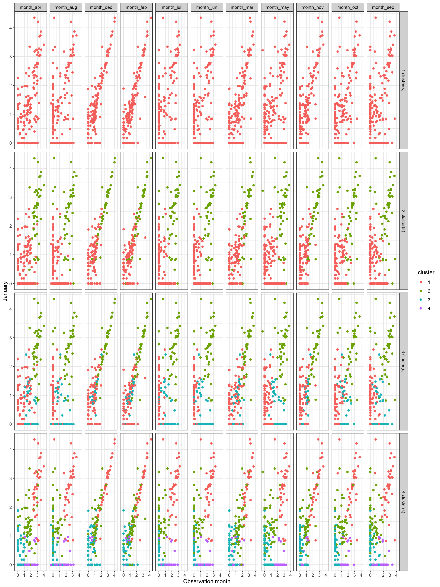
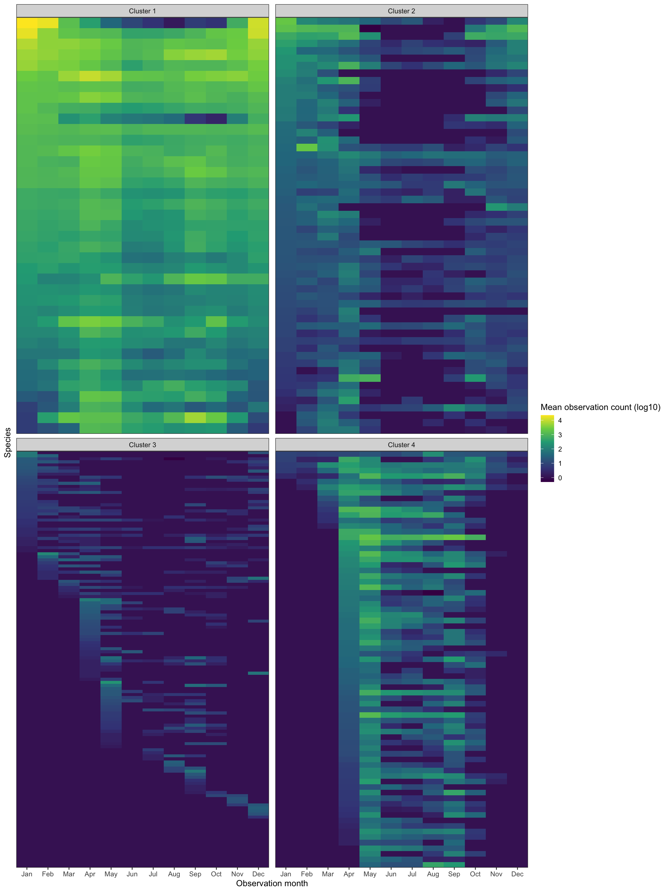
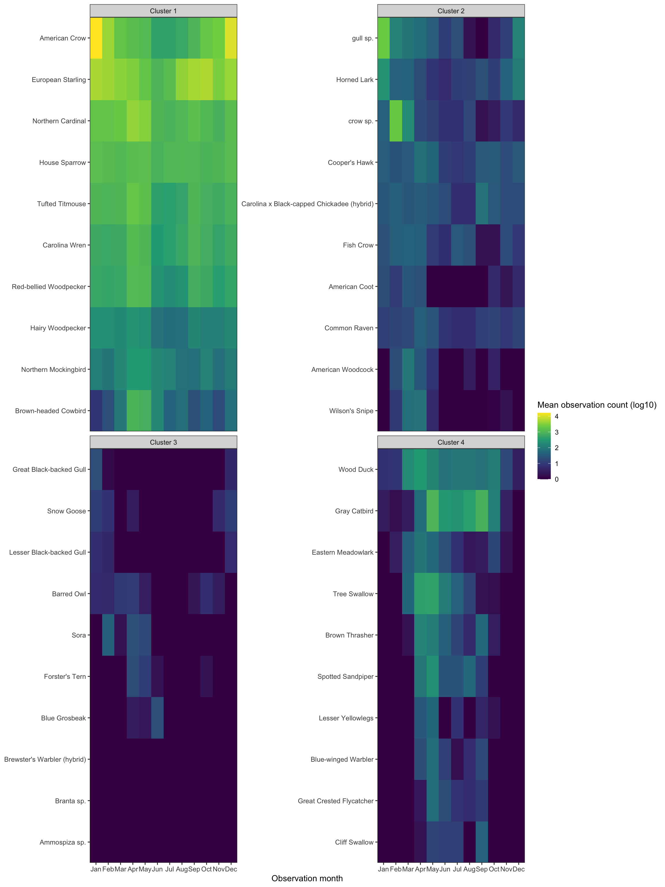

library(tidyverse)
library(lubridate)
library(janitor)
library(vroom)
library(broom)
library(hrbrthemes)
theme_set(theme_bw())
set.seed(1234)In this post, I use k-means clustering to identify clusters of bird species based on frequency of observations per month. I use bird sightings in Allegheny County from eBird.
Load the relevant libraries:
Load and filter the data:
df <- vroom("post_data/ebd_US-PA-003_201001_202003_relFeb-2020.zip", delim = "\t") %>%
clean_names() %>%
mutate_at(vars(observer_id, locality, observation_date, time_observations_started, protocol_type), str_replace_na, "NA") %>%
mutate(observation_count = as.numeric(str_replace(observation_count, "X", as.character(NA))),
observation_event_id = str_c(observer_id, locality, observation_date, time_observations_started, sep = "-"),
observation_date = ymd(observation_date)) %>%
filter(all_species_reported == 1)df_top_protocols <- df %>%
count(protocol_type, sort = TRUE) %>%
slice(1:2)
df <- df %>%
semi_join(df_top_protocols) %>%
filter(year(observation_date) >= 2016)df %>%
select(common_name, observation_date, observation_count) %>%
glimpse()Rows: 533,493
Columns: 3
$ common_name <chr> "American Black Duck", "American Black Duck", "Ameri…
$ observation_date <date> 2016-01-31, 2016-01-24, 2016-01-30, 2016-01-31, 201…
$ observation_count <dbl> 2, 2, 2, 3, 2, 3, 57, 7, 2, 4, 1, 5, 8, 1, 1, 4, 1, …This graph shows general seasonality in bird observations:
df %>%
count(observation_date) %>%
ggplot(aes(observation_date, n)) +
geom_line() +
labs(x = "Observation date",
y = "Observation events") +
scale_y_comma()
This code chunk calculates the average number of observations by species and month. Then, it interpolates a value of 0 for birds where there were no sightings in a given month:
months <- df %>%
mutate(observation_month = month(observation_date, label = TRUE)) %>%
distinct(observation_month) %>%
pull(observation_month)
df_seasonality <- df %>%
mutate(observation_month = month(observation_date, label = TRUE),
observation_year = year(observation_date)) %>%
group_by(common_name, observation_year, observation_month) %>%
summarize(observation_count = sum(observation_count, na.rm = TRUE)) %>%
group_by(common_name, observation_month) %>%
summarize(observation_count_mean = mean(observation_count) %>% round(1)) %>%
ungroup() %>%
complete(common_name, observation_month = months) %>%
replace_na(list(observation_count_mean = 0)) %>%
arrange(common_name, observation_month)
glimpse(df_seasonality)Rows: 3,672
Columns: 3
$ common_name <chr> "Acadian Flycatcher", "Acadian Flycatcher", "Ac…
$ observation_month <ord> Jan, Feb, Mar, Apr, May, Jun, Jul, Aug, Sep, Oc…
$ observation_count_mean <dbl> 0.0, 0.0, 0.0, 0.0, 184.8, 98.5, 67.0, 19.0, 22…This transforms the mean monthly observation into log10:
df_seasonality <- df_seasonality %>%
mutate(observation_count_mean_log10 = log10(observation_count_mean),
observation_count_mean_log10 = case_when(is.infinite(observation_count_mean_log10) ~ 0,
TRUE ~ observation_count_mean_log10)) %>%
select(-observation_count_mean)These graphs show that observations generally increase in the spring and fall, but there is wide variation:
df_seasonality %>%
ggplot(aes(observation_month, observation_count_mean_log10)) +
geom_boxplot() +
labs(x = "Observation month",
y = "Mean observation count (log10)")
This tile graph shows the seasonality trends per species. I sort the birds by ascending mean observation count by month. It shows there are birds that appear year-round, some that appear seasonally, and some that only appear sporadically:
vec_common_name <- df_seasonality %>%
pivot_wider(names_from = observation_month, values_from = observation_count_mean_log10, names_prefix = "month_") %>%
clean_names() %>%
arrange(month_jan, month_feb, month_mar, month_apr, month_may, month_jun, month_jul, month_aug, month_sep, month_oct, month_nov, month_dec) %>%
pull(common_name)df_seasonality %>%
mutate(common_name = factor(common_name, levels = vec_common_name)) %>%
ggplot(aes(observation_month, common_name, fill = observation_count_mean_log10)) +
geom_tile() +
scale_fill_viridis_c("Mean observation count (log10)") +
scale_x_discrete(expand = c(0,0)) +
scale_y_discrete(expand = c(0,0)) +
labs(x = "Observation month",
y = "Species") +
theme(panel.grid = element_blank(),
axis.text.y = element_blank(),
axis.ticks.y = element_blank())
You can subjectively see clusters of bird types in the above graph. I will use k-means to attempt to find those clusters.
This code chunk pivots the data wide to prepare it for clustering:
df_seasonality_wide <- df_seasonality %>%
select(common_name, observation_month, observation_count_mean_log10) %>%
pivot_wider(names_from = observation_month, values_from = observation_count_mean_log10, names_prefix = "month_") %>%
clean_names()
glimpse(df_seasonality_wide)Rows: 306
Columns: 13
$ common_name <chr> "Acadian Flycatcher", "Accipiter sp.", "Alder Flycatcher",…
$ month_jan <dbl> 0.0000000, 0.0000000, 0.0000000, 0.0000000, 0.0000000, 0.0…
$ month_feb <dbl> 0.000000, 0.000000, 0.000000, 0.000000, 0.000000, 0.000000…
$ month_mar <dbl> 0.0000000, 0.1760913, 0.0000000, 0.0000000, 0.0000000, 0.0…
$ month_apr <dbl> 0.0000000, 0.3010300, 0.0000000, 0.0000000, 0.0000000, 0.6…
$ month_may <dbl> 2.2667020, 0.3010300, 0.1760913, 0.4771213, 0.0000000, 0.0…
$ month_jun <dbl> 1.993436, 0.000000, 0.000000, 0.000000, 0.000000, 0.000000…
$ month_jul <dbl> 1.8260748, 0.0000000, 0.0000000, 0.4771213, 0.0000000, 0.0…
$ month_aug <dbl> 1.2787536, 0.0000000, 0.0000000, 0.3979400, 0.9030900, 0.0…
$ month_sep <dbl> 1.3424227, 0.0000000, 0.0000000, 1.0086002, 1.8450980, 0.0…
$ month_oct <dbl> 0.0000000, 0.3010300, 0.0000000, 0.0000000, 0.0000000, 0.0…
$ month_nov <dbl> 0.0000000, 0.0000000, 0.0000000, 0.0000000, 0.0000000, 0.0…
$ month_dec <dbl> 0.0000000, 0.0000000, 0.0000000, 0.0000000, 0.0000000, 0.0…This uses purrr to cluster the data with varying numbers of clusters (1 to 9):
kclusts <- tibble(k = 1:9) %>%
mutate(
kclust = map(k, ~kmeans(df_seasonality_wide %>% select(-common_name), .x)),
tidied = map(kclust, tidy),
glanced = map(kclust, glance),
augmented = map(kclust, augment, df_seasonality_wide %>% select(-common_name))
)
kclusts# A tibble: 9 × 5
k kclust tidied glanced augmented
<int> <list> <list> <list> <list>
1 1 <kmeans> <tibble [1 × 15]> <tibble [1 × 4]> <tibble [306 × 13]>
2 2 <kmeans> <tibble [2 × 15]> <tibble [1 × 4]> <tibble [306 × 13]>
3 3 <kmeans> <tibble [3 × 15]> <tibble [1 × 4]> <tibble [306 × 13]>
4 4 <kmeans> <tibble [4 × 15]> <tibble [1 × 4]> <tibble [306 × 13]>
5 5 <kmeans> <tibble [5 × 15]> <tibble [1 × 4]> <tibble [306 × 13]>
6 6 <kmeans> <tibble [6 × 15]> <tibble [1 × 4]> <tibble [306 × 13]>
7 7 <kmeans> <tibble [7 × 15]> <tibble [1 × 4]> <tibble [306 × 13]>
8 8 <kmeans> <tibble [8 × 15]> <tibble [1 × 4]> <tibble [306 × 13]>
9 9 <kmeans> <tibble [9 × 15]> <tibble [1 × 4]> <tibble [306 × 13]>clusters <- kclusts %>%
unnest(tidied)
assignments <- kclusts %>%
unnest(augmented)
clusterings <- kclusts %>%
unnest(glanced)This scree plot shows that 2 clusters is probably optimal, but 4 could also be useful:
ggplot(clusterings, aes(k, tot.withinss)) +
geom_line() +
geom_vline(xintercept = 2, linetype = 2) +
geom_vline(xintercept = 4, linetype = 2) +
scale_x_continuous(breaks = seq(1:9)) +
labs(x = "Number of clusters")
This graph shows how the clustering performed by comparing the observation value in January to the value in the other months, for each k cluster value 1 through 4:
assignments %>%
select(k, .cluster, contains("month_")) %>%
mutate(id = row_number()) %>%
pivot_longer(cols = contains("month_"), names_to = "observation_month", values_to = "observation_count_mean_log10") %>%
mutate(month_jan = case_when(observation_month == "month_jan" ~ observation_count_mean_log10,
TRUE ~ as.numeric(NA))) %>%
group_by(k, .cluster, id) %>%
fill(month_jan, .direction = c("down")) %>%
ungroup() %>%
filter(observation_month != "month_jan",
k <= 4) %>%
mutate(k = str_c(k, "cluster(s)", sep = " ")) %>%
ggplot(aes(observation_count_mean_log10, month_jan, color = .cluster)) +
geom_point() +
facet_grid(k ~ observation_month) +
labs(x = "Observation month",
y = "January")
Subjectively, I think the optimal number of clusters is 4. It is noiser, but could show more interesting granularity in seasonality.
This clusters the data using 4 clusters:
df_kmeans <- df_seasonality_wide %>%
select(-common_name) %>%
kmeans(centers = 4)df_clustered <- augment(df_kmeans, df_seasonality_wide) %>%
select(common_name, .cluster)
df_clustered# A tibble: 306 × 2
common_name .cluster
<chr> <fct>
1 Acadian Flycatcher 4
2 Accipiter sp. 3
3 Alder Flycatcher 3
4 Alder/Willow Flycatcher (Traill's Flycatcher) 3
5 American Avocet 3
6 American Bittern 3
7 American Black Duck 2
8 American Coot 2
9 American Crow 1
10 American Golden-Plover 3
# ℹ 296 more rowsThis shows the same style of tile graph as shown previously, but facets it by cluster.
vec_common_name_cluster <- df_seasonality %>%
left_join(df_clustered) %>%
pivot_wider(names_from = observation_month, values_from = observation_count_mean_log10, names_prefix = "month_") %>%
clean_names() %>%
arrange(cluster, month_jan, month_feb, month_mar, month_apr, month_may, month_jun, month_jul, month_aug, month_sep, month_oct, month_nov, month_dec) %>%
pull(common_name)df_seasonality_clustered <- df_seasonality %>%
left_join(df_clustered) %>%
mutate(common_name = factor(common_name, levels = vec_common_name_cluster))
df_seasonality_clustered %>%
mutate(.cluster = str_c("Cluster", .cluster, sep = " ")) %>%
ggplot(aes(observation_month, common_name, fill = observation_count_mean_log10)) +
geom_tile() +
facet_wrap(~.cluster, scales = "free_y") +
scale_fill_viridis_c("Mean observation count (log10)") +
scale_x_discrete(expand = c(0,0)) +
scale_y_discrete(expand = c(0,0)) +
labs(x = "Observation month",
y = "Species") +
theme(panel.grid = element_blank(),
axis.text.y = element_blank(),
axis.ticks.y = element_blank())
Cluster 1 shows birds that only appear sporadically. I think these are birds that migrate through Allegheny County, but do not stick around. Cluster 2 shows birds that are generally around all year. Cluster 3 shows birds that are seen mostly during the summer, and cluster 4 contains birds that appear in the winter.
This shows a sample of each cluster:
df_cluster_sample <- df_clustered %>%
group_by(.cluster) %>%
sample_n(10, replace = FALSE) %>%
ungroup()
df_seasonality_clustered %>%
semi_join(df_cluster_sample) %>%
mutate(.cluster = str_c("Cluster", .cluster, sep = " ")) %>%
ggplot(aes(observation_month, common_name, fill = observation_count_mean_log10)) +
geom_tile() +
facet_wrap(~.cluster, scales = "free_y") +
scale_fill_viridis_c("Mean observation count (log10)") +
scale_x_discrete(expand = c(0,0)) +
scale_y_discrete(expand = c(0,0)) +
labs(x = "Observation month",
y = NULL) +
theme(panel.grid = element_blank())